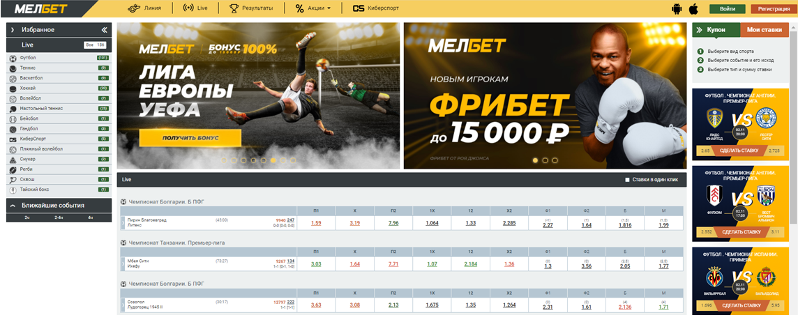
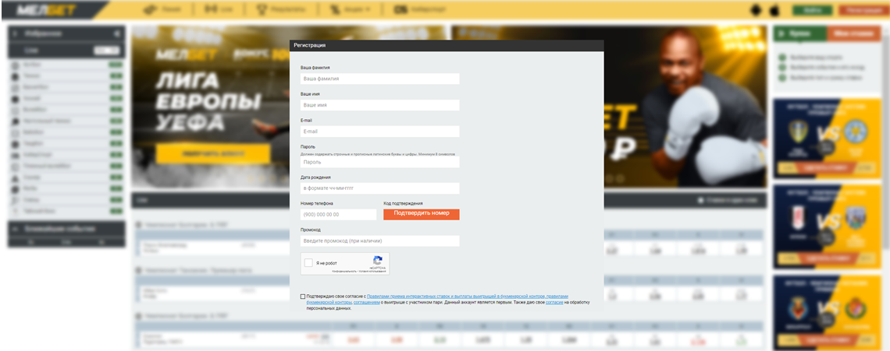
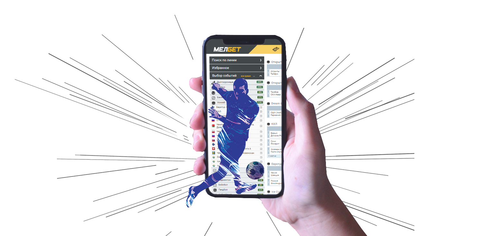
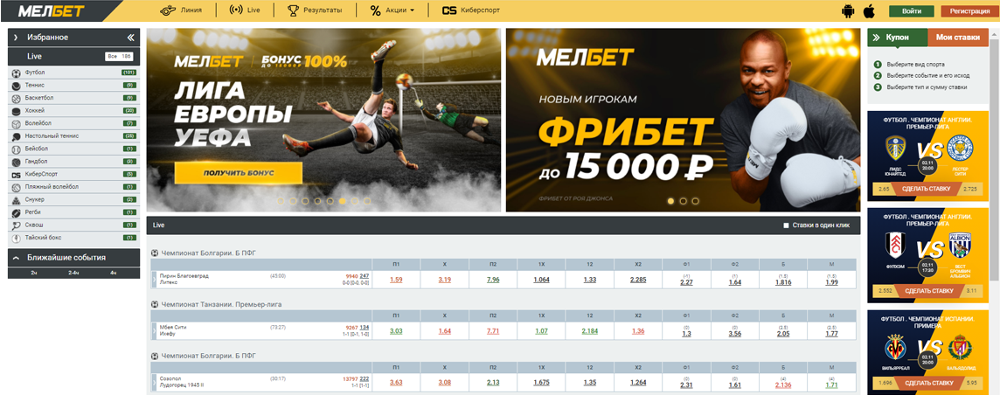
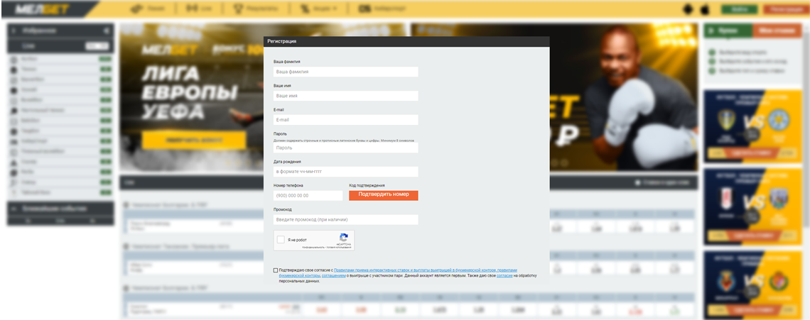
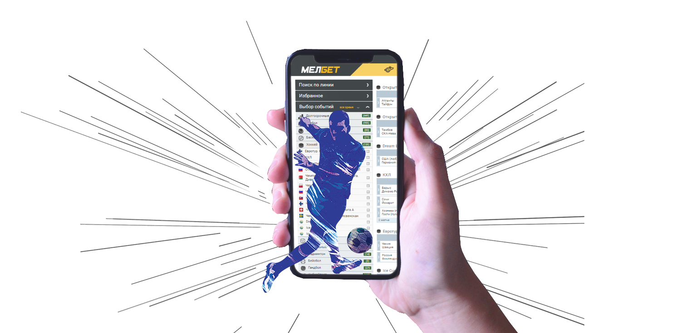

Для начала необходимо пройти регистрацию. Не забудьте указать на промокод, чтобы получить бонус.
Также для удобства скачайте приложение 1win на Андроид или iOS
Перейти на сайт
Также для удобства скачайте приложение 1win на Андроид или iOS
Промокод
BON 2020
Скачать приложение
Официальный сайт 1win работает с 2018 года. Лицензию на работу владельцы конторы получили в том же году, в качестве лицензиата выступает игорная комиссия Кюрасао. Букмекерская контора 1win подчиняется законодательству Нидерландских островов, сайт переведен на 9 языков. Ставки на спорт доступны клиентам с ПЛК, ноутбука, мобильного устройства, планшетного компьютера.
Несмотря на молодой возраст, 1win занимает одну из топовых позиций в рейтинге букмекеров. Этому способствует ориентированность на российских пользователей, крупный бонус на первый депозит и десятки видов спорта. Убедиться в честности букмекера можно и без регистрации: достаточно попасть на главную страницу и пролистать ее вниз. В разделе «Лицензия» клиенту доступна документация , позволяющая конторе вести деятельность в онлайн формате по всему миру.  Как войти на сайт БК 1win? Треть клиентов букмекерской конторы – игроки из РФ и стран СНГ. В данный момент доступ к официальному сайту по прямой ссылке закрыт. Российское законодательство строго контролирует сферу азартных игр, поэтому даже лицензионные букмекеры попадают под блокировку провайдера. И домен 1вин бет также попал в запрещенный реестр РКН, из-за чего перейти на главную страницу букмекера через оригинальную ссылку невозможно. В таком случае игроки используют рабочее на сегодня зеркало 1win.
При использовании зеркальной ссылки, клиент получает:
1. Бесперебойный доступ к личному кабинету, разделам меню и спортивным дисциплинам.
2. Возможность делать ставки через браузерную версию для ПК, а также мобильную версию. В формате для смартфонов пользователи отмечают улучшенную скорость работы.
3. Идентичный функционал, в который входит активация приветственных бонусов, эксклюзивных промокодов и других предложений букмекера.
Запросить зеркало 1win можно у администрации конторы. Обращение через электронную почту русскоязычные агенты рассматривают в течение часа. После обращения, на e-mail придет письмо с рабочим линком внутри. Также стоит подписаться на тематическую рассылку в личном кабинете. Помимо зеркальной ссылки, пользователю на почту регулярно будут приходить новости о свежих бонусных программах и актуальных акциях БК. Перейти на сайт
В 1 клик. После выбора валютного наименования и страны проживания, алгоритм формирует логин и пароль для входа. Сгенерированные данные можно сохранить в кэше браузера, чтобы не тратить время на ввод при следующей авторизации. Уже через минуту клиент окажется в личном кабинете: сможет выбрать дисциплину, сформировать купон и сделать ставку.
С помощью e-mail. Классический вариант, предусматривающий ввод персональных данных в форму. В регистрационную анкету нужно ввести номер телефона, рабочий адрес электронной почты, пароль и выбрать валюту. В отведенное поле можно ввести промокод и получить дополнительный бонус на первые ставки. Активация профиля в системе происходит через e-mail. Кликабельная ссылка будет прикреплена в сообщении от службы безопасности.
Через рабочий номер телефона. Выберите валюту и введите в поле мобильный номер. Ввод специального кода из СМС во всплывающее окно станет последним шагом при регистрации данным методом.
Соц. сети. Чтобы оперативно авторизоваться в БК с любого устройства, профиль из социальных сетей можно привязать к конторе. Предложенный список включает: «Одноклассники», «Вконтакте», «Google+». Помимо выбора валютного наименования, пользователю нужно дать согласие на обработку личных данных. Персональная информация со страницы в соц. сетях будет использована лишь для подтверждения возраста клиента. 
После авторизации в личном кабинете игрок может самостоятельно изменить логин и пароль в настройках. В будущем необходима верификация личности. Процедура привязывает к уникальному идентификатору аккаунта ФИО клиента, его платежные реквизиты. В случае взлома учетной записи злоумышленники не смогут украсть деньги с виртуального счета. Где найти рабочее приложение 1 вин? Ставки на спорт безупречно работают с мобильных гаджетов. Владельцы БК выпустили отдельный софт для смартфонов и планшетов под Android, iOS. Чтобы скачать 1win на Андроид, воспользуйтесь следующей инструкцией:
1. Перейдите в настройки ограничений и безопасности, отключите опцию «Запретить установку программ со сторонних источников». После установки тумблер можно вернуть в первоначальное положение.
2. Войдите на сайт букмекера через смартфон.
3. В правой части титульной страницы найдите блок с приложениями.
4. Кликните на символ операционной системы, дождитесь завершения загрузки.
5. Нажмите 2 раза на значок приложения, после чего начнется автоматическая установка.
Сразу после входа, пользователю доступны все инструменты личного кабинета, 40 видов спорта, киберспортивные дисциплины, раздел live и прематч. Через программу можно пройти регистрацию любым из 4 доступных способов. Для обладателей гаджетов под управлением iOS инструкция не меняется. Стоит отметить, что софта от букмекера нет в AppStore и PlayMarket, поэтому скачать приложение возможно только с официального сайта.
Преимущества работы через приложение конторы Ван Вин:
Круглосуточный доступ к личному кабинету. Программа работает в автономном формате, поэтому блокировки РКН не влияют на работоспособность софта. Помимо этого, игроку не нужно искать зеркала и постоянно проверять почту на наличие свежих доменов.
Отсутствие привязки к месту. Через программу можно сделать прогноз, находясь вдали от дома. Под рукой достаточно иметь смартфон со стабильным интернетом, чтобы войти в аккаунт, пополнить баланс и сделать ставку. Линия и live перенесены в софт в формате 100%. Это же касается виртуальных трансляций, которые можно смотреть с телефона. 
Несмотря на молодой возраст, 1win занимает одну из топовых позиций в рейтинге букмекеров. Этому способствует ориентированность на российских пользователей, крупный бонус на первый депозит и десятки видов спорта. Убедиться в честности букмекера можно и без регистрации: достаточно попасть на главную страницу и пролистать ее вниз. В разделе «Лицензия» клиенту доступна документация , позволяющая конторе вести деятельность в онлайн формате по всему миру.  Как войти на сайт БК 1win? Треть клиентов букмекерской конторы – игроки из РФ и стран СНГ. В данный момент доступ к официальному сайту по прямой ссылке закрыт. Российское законодательство строго контролирует сферу азартных игр, поэтому даже лицензионные букмекеры попадают под блокировку провайдера. И домен 1вин бет также попал в запрещенный реестр РКН, из-за чего перейти на главную страницу букмекера через оригинальную ссылку невозможно. В таком случае игроки используют рабочее на сегодня зеркало 1win.
При использовании зеркальной ссылки, клиент получает:
1. Бесперебойный доступ к личному кабинету, разделам меню и спортивным дисциплинам.
2. Возможность делать ставки через браузерную версию для ПК, а также мобильную версию. В формате для смартфонов пользователи отмечают улучшенную скорость работы.
3. Идентичный функционал, в который входит активация приветственных бонусов, эксклюзивных промокодов и других предложений букмекера.
Запросить зеркало 1win можно у администрации конторы. Обращение через электронную почту русскоязычные агенты рассматривают в течение часа. После обращения, на e-mail придет письмо с рабочим линком внутри. Также стоит подписаться на тематическую рассылку в личном кабинете. Помимо зеркальной ссылки, пользователю на почту регулярно будут приходить новости о свежих бонусных программах и актуальных акциях БК. Перейти на сайт
Промокод
BON 2020
Регистрация на сайте 1 win
Чтобы приступить к ставкам на спорт или киберспорт сразу после переадресации, пользователю необходимо создать учетную запись. Классическая процедура предусматривает ввод личных данных и активацию аккаунта в системе. Для удобства, букмекер предлагает 4 метода по созданию виртуального профиля:
В 1 клик. После выбора валютного наименования и страны проживания, алгоритм формирует логин и пароль для входа. Сгенерированные данные можно сохранить в кэше браузера, чтобы не тратить время на ввод при следующей авторизации. Уже через минуту клиент окажется в личном кабинете: сможет выбрать дисциплину, сформировать купон и сделать ставку.
С помощью e-mail. Классический вариант, предусматривающий ввод персональных данных в форму. В регистрационную анкету нужно ввести номер телефона, рабочий адрес электронной почты, пароль и выбрать валюту. В отведенное поле можно ввести промокод и получить дополнительный бонус на первые ставки. Активация профиля в системе происходит через e-mail. Кликабельная ссылка будет прикреплена в сообщении от службы безопасности.
Через рабочий номер телефона. Выберите валюту и введите в поле мобильный номер. Ввод специального кода из СМС во всплывающее окно станет последним шагом при регистрации данным методом.
Соц. сети. Чтобы оперативно авторизоваться в БК с любого устройства, профиль из социальных сетей можно привязать к конторе. Предложенный список включает: «Одноклассники», «Вконтакте», «Google+». Помимо выбора валютного наименования, пользователю нужно дать согласие на обработку личных данных. Персональная информация со страницы в соц. сетях будет использована лишь для подтверждения возраста клиента. 
После авторизации в личном кабинете игрок может самостоятельно изменить логин и пароль в настройках. В будущем необходима верификация личности. Процедура привязывает к уникальному идентификатору аккаунта ФИО клиента, его платежные реквизиты. В случае взлома учетной записи злоумышленники не смогут украсть деньги с виртуального счета. Где найти рабочее приложение 1 вин? Ставки на спорт безупречно работают с мобильных гаджетов. Владельцы БК выпустили отдельный софт для смартфонов и планшетов под Android, iOS. Чтобы скачать 1win на Андроид, воспользуйтесь следующей инструкцией:
1. Перейдите в настройки ограничений и безопасности, отключите опцию «Запретить установку программ со сторонних источников». После установки тумблер можно вернуть в первоначальное положение.
2. Войдите на сайт букмекера через смартфон.
3. В правой части титульной страницы найдите блок с приложениями.
4. Кликните на символ операционной системы, дождитесь завершения загрузки.
5. Нажмите 2 раза на значок приложения, после чего начнется автоматическая установка.
Сразу после входа, пользователю доступны все инструменты личного кабинета, 40 видов спорта, киберспортивные дисциплины, раздел live и прематч. Через программу можно пройти регистрацию любым из 4 доступных способов. Для обладателей гаджетов под управлением iOS инструкция не меняется. Стоит отметить, что софта от букмекера нет в AppStore и PlayMarket, поэтому скачать приложение возможно только с официального сайта.
Преимущества работы через приложение конторы Ван Вин:
Круглосуточный доступ к личному кабинету. Программа работает в автономном формате, поэтому блокировки РКН не влияют на работоспособность софта. Помимо этого, игроку не нужно искать зеркала и постоянно проверять почту на наличие свежих доменов.
Отсутствие привязки к месту. Через программу можно сделать прогноз, находясь вдали от дома. Под рукой достаточно иметь смартфон со стабильным интернетом, чтобы войти в аккаунт, пополнить баланс и сделать ставку. Линия и live перенесены в софт в формате 100%. Это же касается виртуальных трансляций, которые можно смотреть с телефона. 